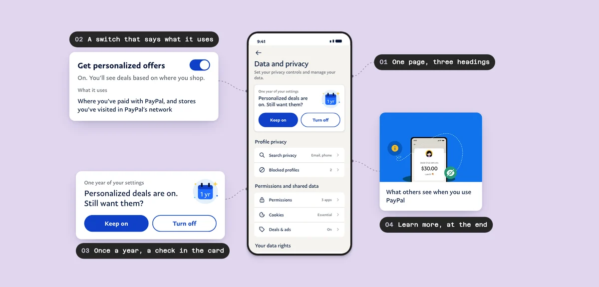
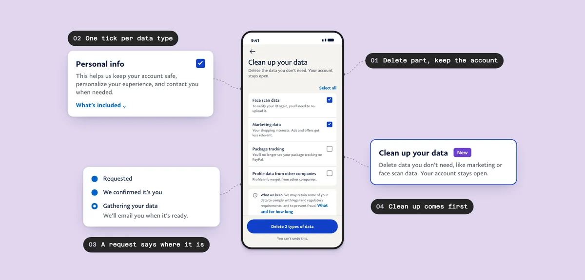
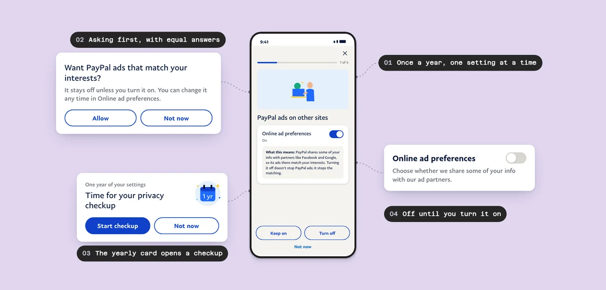
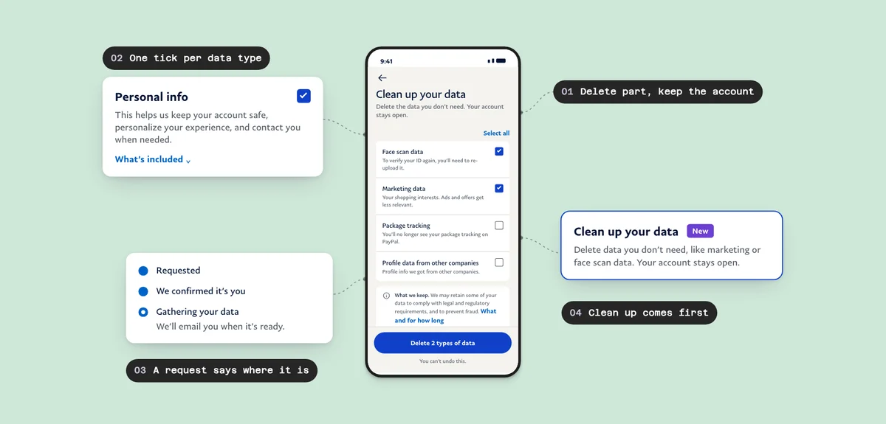
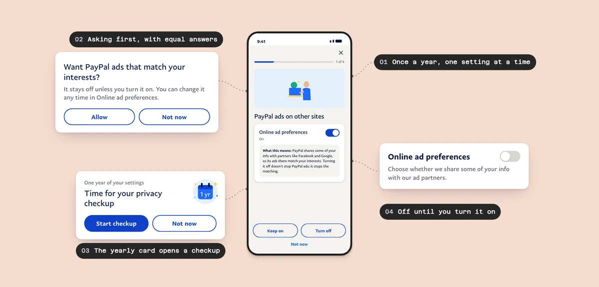

Experiment · PayPal privacy cases · cover options · 2026-11-18
Three cases, three different covers
Today all three share one layout, one hue and the same four notes, so on /work they read as one case three times. Five directions below, each shown for all three cases, then at tile size, the way a recruiter scans the grid.
A · Today
One layout, one hue

Privacy settings

Data rights

Ads consent
- The problem: at tile size all three are a lilac block with a phone in the middle and four dark pills.
B · Same layout, own colour
Lilac, mint, peach
Privacy settings · lilac

Data rights · mint

Ads consent · peach
- Smallest change. Colour tells them apart, the shape still doesn't. Two new grounds would be an exception to "one hue per company", like Debit Card's mint on the home page.
C · Each case its own shape
Structure, flow, decision
Each cover shows the one thing its case is about, in a different arrangement: Privacy is a structure, Data rights is a flow, Ads consent is a question. Same lilac, same type.
Privacy settings · the structure
Data rights · the flow
Ads consent · the decision
- Reads as three different pieces of work even at tile size: one phone with labels, three phones in a row, a headline with two buttons. Still product-first, and the Ads cover is the ask itself.
D · The number first
60%, 76%, 41%
Privacy settings
Data rights
Ads consent
- Fastest for a recruiter: the outcome is the first thing read. But the number is already in the title and the headline numbers under the cover, so it says it three times, and it leans toward the stat-counter look the brief avoids.
E · One detail, close up
The phone, up close
Privacy settings · values on the right
Data rights · what we keep
Ads consent · one step, two answers
- Feels the most crafted: one phone, large, running off the bottom edge, with a line on what to look at. At tile size the three phones look alike again.